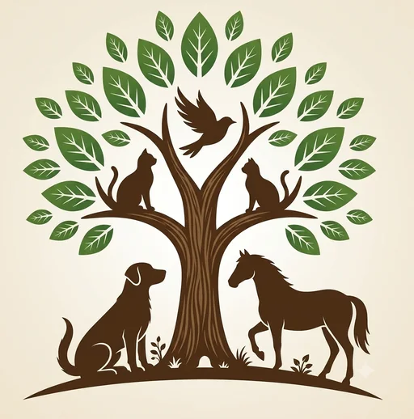
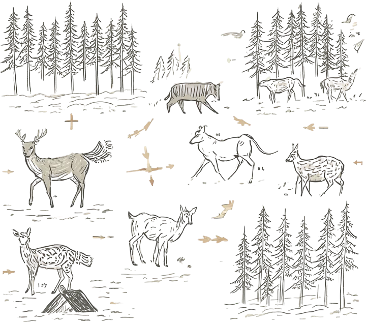
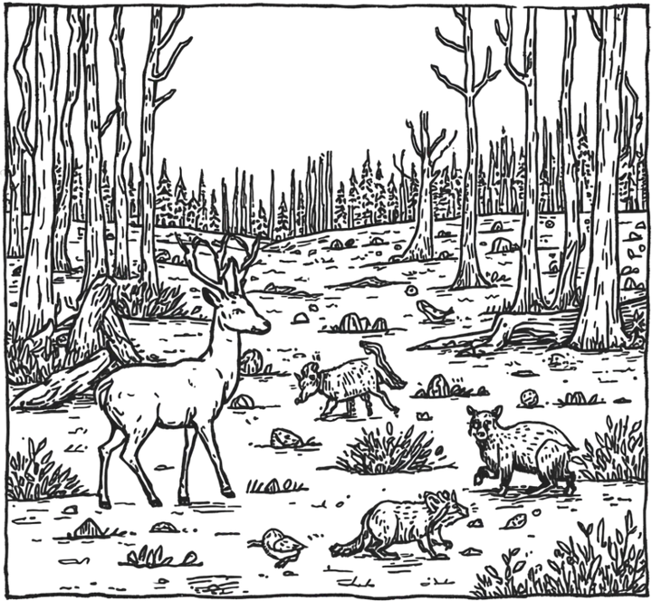
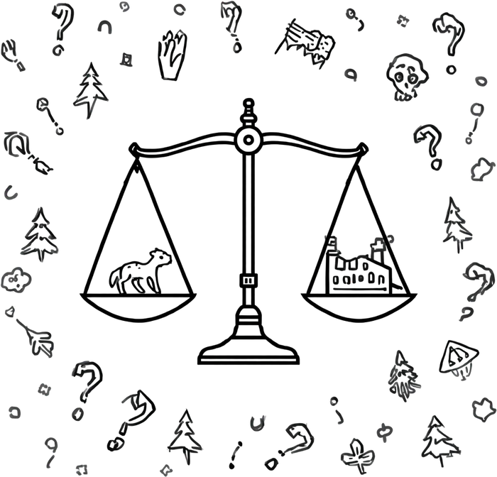
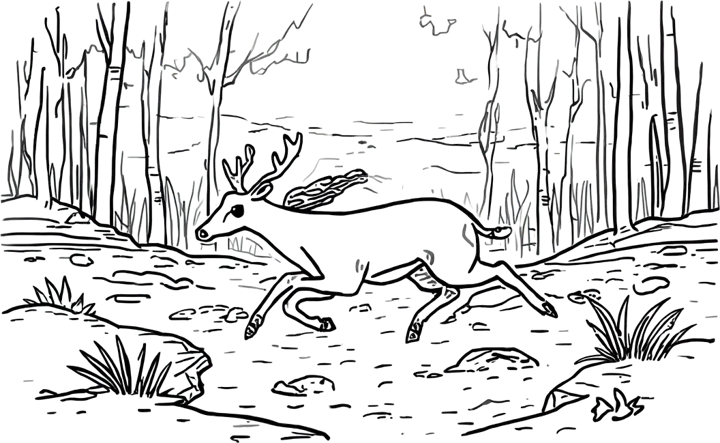
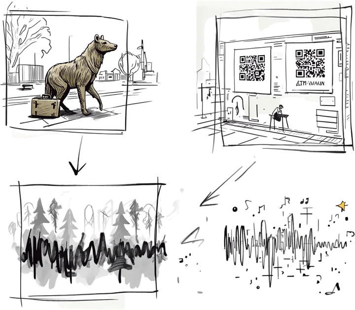
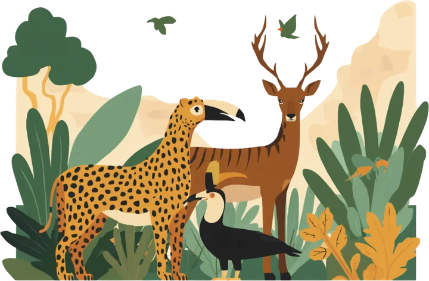

<title>BIOMA Fauna Silvestre</title>
<meta name="claude:viewport-fit-sides" content="cover">
<link rel="preconnect" href="https://fonts.googleapis.com">
<link rel="preconnect" href="https://fonts.gstatic.com" crossorigin>
<link rel="stylesheet" href="https://fonts.googleapis.com/css2?family=Albert+Sans:wght@400;500;600;700&family=Bowlby+One&family=Rubik+Distressed&display=swap">
<style>
/* Layout: una sola página con scroll. Héroe a ancho completo con manchas de color en las esquinas,
   luego secciones sobre la cuadrícula beige de la presentación. Colores y estilo vienen de las diapositivas. */
:root{
  --bg:#E7DDCE; --grid:rgba(110,80,50,.085); --ink:#17130E; --muted:#5B4D3D;
  --green:#46702F; --brown:#4A2A12; --coral:#EAB29E; --sun:#F2D197;
  --card:#F2EADC; --line:#CDBDA5; --on-green:#F6F0E4;
  --lineart:none;
  --display:'Bowlby One','Arial Black',Impact,sans-serif;
  --body:'Albert Sans',system-ui,-apple-system,'Segoe UI',sans-serif;
  --stamp:'Rubik Distressed','Bowlby One','Arial Black',sans-serif;
}
@media (prefers-color-scheme: dark){
  :root:not([data-theme="light"]){
    --bg:#1B1813; --grid:rgba(255,235,200,.05); --ink:#EFE6D6; --muted:#B7A98F;
    --green:#95C078; --brown:#D9B38A; --coral:#B5705A; --sun:#B88F4A;
    --card:#25211A; --line:#3B342A; --on-green:#1B1813;
    --lineart:invert(.9); color-scheme:dark;
  }
}
:root[data-theme="dark"]{
  --bg:#1B1813; --grid:rgba(255,235,200,.05); --ink:#EFE6D6; --muted:#B7A98F;
  --green:#95C078; --brown:#D9B38A; --coral:#B5705A; --sun:#B88F4A;
  --card:#25211A; --line:#3B342A; --on-green:#1B1813;
  --lineart:invert(.9); color-scheme:dark;
}
*{box-sizing:border-box}
html{scroll-behavior:smooth}
body{
  margin:0; background-color:var(--bg); color:var(--ink);
  background-image:linear-gradient(var(--grid) 1px,transparent 1px),linear-gradient(90deg,var(--grid) 1px,transparent 1px);
  background-size:60px 60px;
  font:400 1.0625rem/1.65 var(--body);
}
.wrap{
  max-width:1080px; margin-inline:auto;
  padding-left:max(16px,env(safe-area-inset-left,0px));
  padding-right:max(16px,env(safe-area-inset-right,0px));
}
a{color:inherit}
a:focus-visible{outline:3px solid var(--green); outline-offset:3px; border-radius:4px}
img{display:block; max-width:100%; height:auto}
.lineart{filter:var(--lineart)}

/* Decoración */
.blob{position:absolute; pointer-events:none; z-index:0;
  background:radial-gradient(rgba(60,30,10,.16) 1px,transparent 1.3px) 0 0/5px 5px, var(--coral);
  border-radius:58% 42% 52% 48% / 46% 56% 44% 54%}
.squig{position:absolute; pointer-events:none; z-index:0; color:var(--sun); width:clamp(110px,16vw,190px); height:auto}

/* Héroe */
.hero{position:relative; overflow:hidden; padding-block:clamp(36px,6vw,72px) clamp(40px,6vw,76px)}
.hero .blob.a{width:clamp(170px,26vw,330px); aspect-ratio:1; top:-9%; right:-7%}
.hero .blob.b{width:clamp(150px,22vw,280px); aspect-ratio:1; bottom:-12%; left:-6%}
.hero .squig.a{top:5%; left:-2%}
.hero .squig.b{bottom:6%; right:-1%; transform:rotate(180deg)}
.hero-in{position:relative; z-index:1; display:flex; flex-direction:column; align-items:center; text-align:center; gap:10px}
.logo{width:clamp(150px,22vw,230px); border-radius:18px; box-shadow:0 1px 0 var(--line)}
.stamp{margin:6px 0 0; font:400 clamp(4.2rem,17vw,10rem)/.9 var(--stamp); color:var(--green); letter-spacing:.01em}
.y{margin:0; font:700 clamp(1.4rem,3vw,2rem)/1 var(--body)}
.hero h1{margin:0; font:400 clamp(1.45rem,4.6vw,3rem)/1.08 var(--display); text-transform:uppercase; text-wrap:balance; max-width:20ch}
.pill{margin-top:14px; background:var(--card); border:1px solid var(--line); border-radius:999px; padding:9px 22px; font-weight:600; font-size:1rem}
.pill span{color:var(--muted); padding-inline:6px}
.index{position:relative; z-index:1; margin-top:22px; display:flex; flex-wrap:wrap; justify-content:center; gap:8px; padding:0; list-style:none; max-width:760px}
.index a{display:block; text-decoration:none; font-size:.9rem; font-weight:600; padding:6px 14px; border-radius:999px; border:1px solid var(--line); background:color-mix(in srgb,var(--card) 80%,transparent)}
.index a:hover{border-color:var(--green); color:var(--green)}

/* Secciones */
.sec{padding-block:clamp(44px,7vw,92px)}
.sec + .sec{border-top:1px solid var(--line)}
h2{margin:0 0 clamp(20px,3vw,34px); font:400 clamp(1.7rem,4.4vw,3rem)/1.04 var(--display); text-transform:uppercase; text-wrap:balance}
h3{margin:0 0 6px; font:700 1.15rem/1.25 var(--body)}
p{margin:0 0 1em}
.cite{color:var(--muted); font-size:.93em; white-space:normal}
.lead{font-size:clamp(1.15rem,2.2vw,1.45rem); line-height:1.5; max-width:46ch}
.split{display:grid; grid-template-columns:1fr 1fr; gap:clamp(24px,4vw,56px); align-items:center}
.split > *{min-width:0}
.card{background:var(--card); border:1px solid var(--line); border-radius:16px; padding:clamp(18px,2.6vw,28px)}
.chips{display:flex; flex-wrap:wrap; gap:8px; padding:0; margin:14px 0 0; list-style:none}
.chips li{background:var(--bg); border:1px solid var(--line); border-radius:999px; padding:4px 13px; font-size:.92rem; font-weight:500}

/* Quiénes somos */
.about .lead strong{font-family:var(--display); font-weight:400; color:var(--green); text-transform:uppercase; font-size:.8em; letter-spacing:.03em; display:block; margin-bottom:6px}
.rigor h3{font-family:var(--display); font-weight:400; text-transform:uppercase; font-size:1.05rem; color:var(--green)}

/* Marco conceptual */
.defs{display:grid; gap:14px}
.defs .card p{margin:0}
.defs .card h3{display:flex; align-items:center; gap:10px}
.defs .card h3::before{content:""; width:12px; height:12px; border-radius:50%; background:var(--coral); flex:none}
.defs .card.alt h3::before{background:var(--green)}

/* Diagnóstico */
.stats{display:grid; grid-template-columns:repeat(4,1fr); gap:14px; margin-bottom:clamp(26px,4vw,44px)}
.stat{background:var(--card); border:1px solid var(--line); border-radius:16px; padding:18px 18px 16px; min-width:0}
.stat b{display:block; font:400 clamp(1.6rem,3.4vw,2.35rem)/1 var(--display); color:var(--green); font-variant-numeric:tabular-nums; margin-bottom:8px}
.stat span{display:block; font-size:.95rem; line-height:1.4}
.stat small{display:block; margin-top:6px; color:var(--muted); font-size:.82rem}
.gauge{margin:6px 0 4px}
.gauge h3{font-size:1rem; margin-bottom:34px}
.track{position:relative; height:16px; background:var(--card); border:1px solid var(--line); border-radius:999px}
.band{position:absolute; left:40%; width:40%; top:-1px; bottom:-1px; background:var(--sun); border-radius:999px}
.pin{position:absolute; left:49.2%; top:-10px; width:4px; height:36px; background:var(--ink); border-radius:2px; transform:translateX(-50%)}
.pin em{position:absolute; bottom:calc(100% + 4px); left:50%; transform:translateX(-50%); white-space:nowrap; font:700 .85rem/1.2 var(--body); font-style:normal; font-variant-numeric:tabular-nums}
.ticks{position:relative; height:22px; margin-top:12px; font-size:.78rem; color:var(--muted); font-variant-numeric:tabular-nums}
.ticks span{position:absolute; transform:translateX(-50%); white-space:nowrap}
.ticks span:first-child{transform:none}
.gauge-note{margin:2px 0 0; font-size:.88rem; color:var(--muted)}
.consq{display:grid; grid-template-columns:repeat(2,1fr); gap:10px; padding:0; margin:0 0 14px; list-style:none}
.consq li{background:var(--card); border:1px solid var(--line); border-radius:12px; padding:12px 14px; font-weight:600; line-height:1.35}

/* Dilema */
.scale{display:grid; grid-template-columns:1fr minmax(170px,300px) 1fr; gap:clamp(18px,3vw,40px); align-items:center}
.scale > *{min-width:0}
.scale .card h3{font-family:var(--display); font-weight:400; text-transform:uppercase; font-size:1.05rem}
.scale .card.left h3{color:var(--brown)}
.scale .card.right h3{color:var(--green)}

/* Análisis crítico */
.crit{display:grid; grid-template-columns:1.1fr 1fr; gap:clamp(24px,5vw,64px)}
.crit > *{min-width:0}
.crit .big{font:400 clamp(1.25rem,2.6vw,1.75rem)/1.3 var(--display); text-wrap:balance; margin:0}
.crit .big mark{background:linear-gradient(transparent 58%,var(--sun) 58%); color:inherit}
.crit .rest{border-left:3px solid var(--coral); padding-left:clamp(16px,2.4vw,28px)}

/* Ecología */
.edge{margin-top:clamp(22px,3vw,34px)}
.edge h3{font-size:1rem; margin-bottom:12px}
.edge-bar{position:relative; height:46px; border-radius:10px; border:1px solid var(--line); overflow:hidden;
  background:linear-gradient(90deg,var(--coral) 0%,var(--sun) 38%,var(--green) 100%)}
.edge-bar i{position:absolute; top:0; bottom:0; right:0; width:0; border-left:2px dashed var(--ink)}
.edge-labels{display:flex; justify-content:space-between; gap:12px; margin-top:8px; font-size:.86rem; color:var(--muted)}
.edge-labels b{color:var(--ink)}
.eco-img{width:100%; border-radius:14px}

/* Campaña */
.concept{display:grid; grid-template-columns:1.05fr 1fr; gap:clamp(22px,4vw,56px); align-items:center}
.concept > *{min-width:0}
.concept .name{font:400 clamp(2rem,6vw,3.8rem)/.98 var(--display); text-transform:uppercase; margin:0 0 14px; color:var(--green)}
.strands{display:grid; grid-template-columns:repeat(3,1fr); gap:14px; margin-top:clamp(26px,4vw,44px)}
.strand{background:var(--card); border:1px solid var(--line); border-radius:16px; padding:20px; min-width:0}
.strand .tag{display:inline-block; font-size:.78rem; font-weight:700; letter-spacing:.08em; text-transform:uppercase; color:var(--muted); margin-bottom:10px}
.strand h3{font:400 1.25rem/1.15 var(--display); text-transform:uppercase; margin-bottom:10px}
.strand p{margin:0}

/* Estructura operativa */
.months{display:grid; grid-template-columns:repeat(12,1fr); gap:4px; margin-bottom:6px}
.months span{font-size:.78rem; color:var(--muted); text-align:center; font-variant-numeric:tabular-nums}
.phases-bar{display:grid; grid-template-columns:repeat(12,1fr); gap:4px; margin-bottom:clamp(22px,3vw,34px)}
.phases-bar div{border-radius:10px; padding:12px 6px; text-align:center; font:700 .92rem/1.2 var(--body); color:var(--ink)}
.p1{grid-column:1 / span 3; background:var(--sun)}
.p2{grid-column:4 / span 5; background:var(--coral)}
.p3{grid-column:9 / span 4; background:var(--green); color:var(--on-green) !important}
.phase-cards{display:grid; grid-template-columns:repeat(3,1fr); gap:14px}
.phase{background:var(--card); border:1px solid var(--line); border-radius:16px; padding:22px; min-width:0}
.phase .when{font-size:.82rem; font-weight:700; letter-spacing:.08em; text-transform:uppercase; color:var(--muted)}
.phase h3{font:400 1.2rem/1.15 var(--display); text-transform:uppercase; margin:6px 0 12px}
.phase .goal{margin-top:14px; padding-top:12px; border-top:1px dashed var(--line); font-weight:600}
.phase .goal b{font-variant-numeric:tabular-nums}

/* Evaluación */
.eval{display:grid; grid-template-columns:repeat(2,1fr); gap:14px}
.metric{background:var(--card); border:1px solid var(--line); border-radius:16px; padding:22px; min-width:0}
.metric .k{font-size:.82rem; font-weight:700; letter-spacing:.08em; text-transform:uppercase; color:var(--muted)}
.metric .v{display:block; font:400 clamp(2rem,4.4vw,3rem)/1 var(--display); color:var(--green); margin:6px 0 10px; font-variant-numeric:tabular-nums}
.metric p{margin:0}
.split-bar{display:flex; height:30px; border-radius:999px; overflow:hidden; margin:6px 0 10px; border:1px solid var(--line); font:700 .85rem/30px var(--body)}
.split-bar span{display:block; text-align:center; white-space:nowrap}
.split-bar .intl{width:30%; background:var(--sun); color:var(--ink)}
.split-bar .citz{width:70%; background:var(--green); color:var(--on-green)}

/* Síntesis */
.synth{display:grid; grid-template-columns:1fr 1fr; gap:clamp(24px,4vw,56px); align-items:center}
.synth > *{min-width:0}
.synth img{width:100%; border-radius:18px}
.synth .lead{max-width:none}
.synth .urgent{display:inline-block; margin-top:6px; font:400 1.05rem/1.2 var(--display); text-transform:uppercase; background:var(--green); color:var(--on-green); padding:10px 16px; border-radius:10px}

/* Referencias */
.refs{display:grid; grid-template-columns:1fr minmax(160px,260px); gap:clamp(24px,4vw,48px); align-items:start}
.refs > *{min-width:0}
.reflist{margin:0; padding:0; list-style:none; display:grid; gap:10px}
.reflist li{background:var(--card); border:1px solid var(--line); border-radius:12px; padding:10px 14px; line-height:1.45}
.reflist b{display:block; color:var(--green)}
.reflist span{display:block; font-size:.93rem}
.reflist em{color:var(--muted); font-size:.88rem}
.consulted{margin-top:clamp(30px,5vw,56px)}
.consulted h3{font:400 1.2rem/1.2 var(--display); text-transform:uppercase; margin-bottom:14px}
.src{columns:2; column-gap:28px; padding:0; margin:0; list-style:none}
.src li{break-inside:avoid; margin-bottom:12px; font-size:.92rem; line-height:1.4}
.src small{display:block; color:var(--muted); font-size:.8rem}

/* Pie */
.foot{position:relative; overflow:hidden; padding-block:clamp(34px,5vw,56px); text-align:center; border-top:1px solid var(--line)}
.foot .blob{width:clamp(130px,18vw,220px); aspect-ratio:1; bottom:-45%; left:-4%}
.foot .squig{bottom:-6%; right:-2%; transform:rotate(180deg)}
.foot p{position:relative; z-index:1; margin:0; font-weight:600}
.foot .name{font:400 1.4rem/1 var(--stamp); color:var(--green); margin-bottom:6px}

@media (max-width:900px){
  .stats{grid-template-columns:repeat(2,1fr)}
  .strands,.phase-cards{grid-template-columns:1fr}
  .scale{grid-template-columns:1fr}
  .scale .mid{order:-1; max-width:240px; margin-inline:auto}
}
@media (max-width:760px){
  .split,.crit,.concept,.synth,.refs,.eval{grid-template-columns:1fr}
  .consq{grid-template-columns:1fr}
  .refs aside{max-width:240px}
  .src{columns:1}
  .months span{font-size:.7rem}
  .phases-bar div{font-size:.8rem; padding-inline:2px}
}
@media (max-width:420px){
  body{font-size:1rem}
  .stats{grid-template-columns:1fr}
  .pill{font-size:.92rem; padding-inline:16px}
}
@media (prefers-reduced-motion:reduce){html{scroll-behavior:auto}}
</style>

<header class="hero" id="inicio">
  <div class="blob a"></div><div class="blob b"></div>
  <svg class="squig a" viewBox="0 0 150 90" fill="none" aria-hidden="true"><path d="M8 62 C 24 14, 76 6, 66 48 S 26 76, 62 38 S 126 14, 142 54" stroke="currentColor" stroke-width="16" stroke-linecap="round"/></svg>
  <svg class="squig b" viewBox="0 0 150 90" fill="none" aria-hidden="true"><path d="M8 62 C 24 14, 76 6, 66 48 S 26 76, 62 38 S 126 14, 142 54" stroke="currentColor" stroke-width="16" stroke-linecap="round"/></svg>
  <div class="wrap hero-in">
    
    <p class="stamp">BIOMA</p>
    <p class="y">y</p>
    <h1>El desplazamiento forzado de fauna silvestre en Colombia</h1>
    <p class="pill">Colegio Divino Salvador<span>|</span>Agosto 2026</p>
    <ul class="index" aria-label="Secciones de la página">
      <li><a href="#quienes">Quiénes somos</a></li>
      <li><a href="#marco">Marco conceptual</a></li>
      <li><a href="#diagnostico">Diagnóstico</a></li>
      <li><a href="#dilema">Dilema</a></li>
      <li><a href="#analisis">Análisis crítico</a></li>
      <li><a href="#ecologia">Ecología del movimiento</a></li>
      <li><a href="#campana">Campaña</a></li>
      <li><a href="#estructura">Estructura operativa</a></li>
      <li><a href="#impacto">Impacto</a></li>
      <li><a href="#sintesis">Síntesis</a></li>
      <li><a href="#fuentes">Fuentes</a></li>
    </ul>
  </div>
</header>

<main>

<section class="sec about" id="quienes">
  <div class="wrap split">
    <div>
      <h2>Quiénes somos</h2>
      <p class="lead">Organización de la sociedad civil dedicada a la defensa jurídica, ecológica y cultural de los derechos de la naturaleza y la fauna silvestre en Colombia, abordando la crisis de biodiversidad como un problema de justicia espacial y territorial.</p>
    </div>
    <div class="card rigor">
      <h3>Rigor metodológico</h3>
      <p>No genera datos primarios aislados; fundamenta sus propuestas en la recopilación, triangulación y análisis crítico de datos secundarios provenientes de:</p>
      <ul class="chips">
        <li>Repositorios universitarios</li>
        <li>IDEAM</li>
        <li>Instituto Humboldt</li>
        <li>Comisión de la Verdad</li>
        <li>Literatura académica internacional</li>
      </ul>
    </div>
  </div>
</section>

<section class="sec" id="marco">
  <div class="wrap">
    <h2>Marco conceptual e introducción al desplazamiento animal</h2>
    <div class="split">
      
      <div class="defs">
        <div class="card">
          <h3>Migración</h3>
          <p>Proceso biológico natural, estacional y adaptativo para la supervivencia de las especies.</p>
        </div>
        <div class="card alt">
          <h3>Desplazamiento forzado</h3>
          <p>Expulsión abrupta y no deseada causada por actividades humanas <span class="cite">(Sánchez-López, 2025; Seiler &amp; Helldin, 2006)</span>.</p>
        </div>
        <div class="card">
          <h3>Premisa institucional</h3>
          <p>Los animales son exiliados territoriales producto de la deforestación, minería y expansión agropecuaria <span class="cite">(Serna &amp; Castillo, 2024; Mayorga Coy, 2021)</span>.</p>
        </div>
        <div class="card alt">
          <h3>Impactos directos</h3>
          <ul class="chips" style="margin-top:6px">
            <li>Ruptura de movilidad</li><li>Estrés crónico</li><li>Inanición</li><li>Atropellamiento</li><li>Vulnerabilidad a la caza</li>
          </ul>
          <p class="cite" style="margin:10px 0 0">(Instituto de Protección Animal Bogotá, 2024)</p>
        </div>
      </div>
    </div>
  </div>
</section>

<section class="sec" id="diagnostico">
  <div class="wrap">
    <h2>Diagnóstico estadístico</h2>
    <div class="stats">
      <div class="stat"><b>+1.000.000</b><span>especies en riesgo global por pérdida de hábitat y desplazamiento forzado</span><small>IPBES, 2019</small></div>
      <div class="stat"><b>123.000 ha</b><span>deforestadas en Colombia durante 2022</span><small>IDEAM, 2022</small></div>
      <div class="stat"><b>100.000–200.000</b><span>hectáreas por año es el promedio histórico de deforestación</span><small>IDEAM</small></div>
      <div class="stat"><b>+1.200</b><span>especies bajo amenaza directa en el territorio nacional</span><small>Colombia</small></div>
    </div>

    <div class="split" style="align-items:start">
      <div>
        <div class="gauge" role="img" aria-label="Escala de hectáreas deforestadas por año: el dato de 2022, 123.000 hectáreas, cae dentro del rango histórico de 100.000 a 200.000">
          <h3>2022 frente al promedio histórico (ha por año)</h3>
          <div class="track">
            <div class="band"></div>
            <div class="pin"><em>2022: 123.000 ha</em></div>
          </div>
          <div class="ticks"><span style="left:0">0</span><span style="left:40%">100.000</span><span style="left:80%">200.000</span></div>
          <p class="gauge-note">La franja amarilla marca el promedio histórico de 100.000 a 200.000 ha/año. Escala de 0 a 250.000 ha.</p>
        </div>
        <h3 style="margin-top:28px">Consecuencias ecosistémicas</h3>
        <ul class="consq">
          <li>Fragmentación de hábitats</li>
          <li>Desorientación de fauna</li>
          <li>Ruptura de corredores biológicos</li>
          <li>Escalada de conflictos humano-fauna</li>
        </ul>
        <p class="cite">(Mayorga Coy, 2021)</p>
      </div>
      
    </div>
  </div>
</section>

<section class="sec" id="dilema">
  <div class="wrap">
    <h2>El dilema al que nos enfrentamos</h2>
    <div class="scale">
      <div class="card left">
        <h3>Hegemonía antropocéntrica</h3>
        <p>Reduce el territorio a recurso económico y convierte a la fauna en refugiada permanente <span class="cite">(DPLF, 2025; Mayorga Coy, 2021)</span>.</p>
        <p style="margin:0">Se cuestiona la legitimidad moral de un modelo que despoja a los animales de su condición de sujetos <span class="cite">(Camacho, 2015)</span>.</p>
      </div>
      <div class="mid"></div>
      <div class="card right">
        <h3>Perspectiva biocéntrica</h3>
        <p style="margin:0">Propone la conservación como justicia restaurativa y el reconocimiento de los derechos de la naturaleza <span class="cite">(Martínez &amp; Acosta, 2017)</span>.</p>
      </div>
    </div>
  </div>
</section>

<section class="sec" id="analisis">
  <div class="wrap">
    <h2>Un análisis crítico del fenómeno</h2>
    <div class="crit">
      <div>
        <p class="big">El desplazamiento forzado de fauna es consecuencia estructural del modelo de <mark>acumulación por desposesión</mark>: la naturaleza se convierte en botín de guerra, expulsando simultáneamente a comunidades humanas y especies silvestres.</p>
        <p class="cite" style="margin-top:14px">(Tobón, 2018; Mayorga Coy, 2021)</p>
      </div>
      <div class="rest">
        <p>La destrucción del paisaje fragmenta la memoria biocultural de los territorios, borrando las relaciones ecológicas y simbólicas entre fauna local y comunidades.</p>
        <p style="margin:0">La Comisión de la Verdad <span class="cite">(CEV, 2022)</span> documenta cómo el conflicto armado y la expansión extractiva han operado como vectores simultáneos de despojo humano y animal <span class="cite">(Sánchez-López, 2025)</span>.</p>
      </div>
    </div>
  </div>
</section>

<section class="sec" id="ecologia">
  <div class="wrap">
    <h2>Ecología del movimiento y fragmentación de hábitats</h2>
    <div class="split">
      <div class="defs">
        <div class="card">
          <h3>Movimiento animal</h3>
          <p>El paradigma de Nathan et al. (2008) lo define como la interacción entre estado interno, capacidad motriz, navegación y entorno.</p>
        </div>
        <div class="card alt">
          <h3>Desplazamiento antropogénico</h3>
          <p>A diferencia de la migración adaptativa, genera estrés crónico, desorientación y fallos reproductivos <span class="cite">(Olalde Vázquez, 2024)</span>.</p>
        </div>
        <div class="card">
          <h3>Efecto barrera y efecto borde</h3>
          <p style="margin:0">El efecto barrera corta el flujo génico, mientras que el efecto borde modifica el microclima hasta 350 m dentro del bosque, forzando la huida de especies sensibles <span class="cite">(Seiler &amp; Helldin, 2006)</span>.</p>
        </div>
      </div>
      
    </div>
    <div class="edge" role="img" aria-label="Esquema del efecto borde: el microclima cambia hasta 350 metros dentro del bosque">
      <h3>Efecto borde: hasta 350 m dentro del bosque</h3>
      <div class="edge-bar"></div>
      <div class="edge-labels"><span><b>Borde del bosque</b> · microclima alterado</span><span><b>350 m</b> · límite del efecto</span></div>
    </div>
  </div>
</section>

<section class="sec" id="campana">
  <div class="wrap">
    <h2>¿Qué tan creativa será nuestra campaña?</h2>
    <div class="concept">
      <div>
        <p class="name">Éxodo Invisible</p>
        <p class="lead">Una estrategia transmedia disruptiva para visibilizar el desplazamiento de fauna silvestre mediante narrativa simbólica.</p>
      </div>
      
    </div>
    <div class="strands">
      <div class="strand"><span class="tag">Códigos QR</span><h3>Bestiario del Éxodo</h3><p>Información de las especies en mayor peligro a través de QR.</p></div>
      <div class="strand"><span class="tag">QR y realidad aumentada</span><h3>Líneas de Refugio</h3><p>QR y realidad aumentada.</p></div>
      <div class="strand"><span class="tag">Exposiciones</span><h3>Voces del Despojo</h3><p>Exposiciones sobre los implicados en este tipo de desplazamiento e información sobre ellos.</p></div>
    </div>
  </div>
</section>

<section class="sec" id="estructura">
  <div class="wrap">
    <h2>Estructura operativa y estrategias de difusión</h2>
    <div class="months" aria-hidden="true"><span>1</span><span>2</span><span>3</span><span>4</span><span>5</span><span>6</span><span>7</span><span>8</span><span>9</span><span>10</span><span>11</span><span>12</span></div>
    <div class="phases-bar" role="img" aria-label="Cronograma de 12 meses: fase 1 meses 1 a 3, fase 2 meses 4 a 8, fase 3 meses 9 a 12">
      <div class="p1">Fase 1</div><div class="p2">Fase 2</div><div class="p3">Fase 3</div>
    </div>
    <div class="phase-cards">
      <article class="phase">
        <span class="when">Meses 1–3</span>
        <h3>Sensibilización masiva</h3>
        <p>Despliegue en redes sociales y cortometrajes.</p>
        <p class="goal">Meta: <b>5 mil</b> impresiones digitales y <b>1.000</b> firmas ciudadanas en plataformas de incidencia, de forma inicial.</p>
      </article>
      <article class="phase">
        <span class="when">Meses 4–8</span>
        <h3>Intervención territorial</h3>
        <p>Talleres comunitarios en zonas críticas de deforestación. Distribución de guías pedagógicas, mapas de conectividad ecológica y kits de monitoreo participativo de fauna.</p>
        <p class="goal"><b>25</b> talleres comunitarios.</p>
      </article>
      <article class="phase">
        <span class="when">Meses 9–12</span>
        <h3>Incidencia normativa</h3>
        <p>Convocatoria de audiencias públicas.</p>
        <p class="goal">Proposición formal de una Ley contra el desplazamiento forzado de fauna silvestre en Colombia.</p>
      </article>
    </div>
  </div>
</section>

<section class="sec" id="impacto">
  <div class="wrap">
    <h2>Evaluación de impacto y sostenibilidad</h2>
    <div class="eval">
      <div class="metric"><span class="k">Ecológico</span><span class="v">5.000 ha</span><p>Restablecimiento de conectividad mediante corredores monitoreados <span class="cite">(IDEAM, 2022)</span>.</p></div>
      <div class="metric"><span class="k">Social</span><span class="v">+16%</span><p>Incremento en el reconocimiento público del animal como víctima de despojo, de acuerdo con las directivas iniciales.</p></div>
      <div class="metric"><span class="k">Normativo</span><span class="v">1 ordenanza</span><p>Adopción de la categoría de desplazamiento en al menos una ordenanza regional.</p></div>
      <div class="metric">
        <span class="k">Modelo financiero</span>
        <div class="split-bar" role="img" aria-label="30 por ciento cooperación internacional, 70 por ciento aportes ciudadanos"><span class="intl">30%</span><span class="citz">70%</span></div>
        <p><b>30%</b> cooperación internacional y <b>70%</b> aportes ciudadanos, con auditoría pública.</p>
      </div>
    </div>
  </div>
</section>

<section class="sec" id="sintesis">
  <div class="wrap synth">
    <div>
      <h2>Síntesis institucional y compromiso de transformación</h2>
      <p class="lead">Erradicar la invisibilización del animal en planes de ordenamiento <span class="cite">(DPLF, 2025; Mayorga Coy, 2021)</span> y reconocer las especies silvestres como coinquilinas legítimas con derechos inalienables <span class="cite">(Sánchez-López, 2025; Martínez &amp; Acosta, 2017)</span>.</p>
      <span class="urgent">Acción político-jurídica, territorial y cultural urgente</span>
    </div>
    
  </div>
</section>

<section class="sec" id="fuentes">
  <div class="wrap">
    <h2>Mapeo epistemológico</h2>
    <div class="refs">
      <div>
        <p class="lead" style="max-width:none">Sustentación científica y jurídica del desplazamiento forzado de fauna silvestre, basada en fuentes académicas, repositorios universitarios, informes institucionales y tesis doctorales. Estas son las principales referencias que fundamentan la investigación.</p>
        <ul class="reflist">
          <li><b>Sánchez-López, E. (2025)</b><span>Desplazamiento forzado de fauna: marco conceptual y dimensión ética.</span><em>Revista Biodiversidad Latinoamericana</em></li>
          <li><b>Mayorga Coy, J. (2021)</b><span>Territorio, despojo y exilio animal en Colombia.</span><em>Repositorio Universidad Nacional</em></li>
          <li><b>Seiler &amp; Helldin (2006)</b><span>Efecto barrera y fragmentación de hábitats.</span><em>Journal of Applied Ecology</em></li>
          <li><b>Nathan et al. (2008)</b><span>Paradigma de ecología del movimiento animal.</span><em>PNAS</em></li>
          <li><b>CEV, Comisión de la Verdad (2022)</b><span>Naturaleza como víctima del conflicto armado.</span><em>Informe Final</em></li>
          <li><b>IDEAM (2022)</b><span>Monitoreo de la deforestación en Colombia.</span><em>Informe técnico oficial</em></li>
          <li><b>IPBES (2019)</b><span>Global Assessment Report on Biodiversity and Ecosystem Services.</span></li>
          <li><b>Camacho, A. (2015)</b><span>Ética ambiental y derechos de la naturaleza.</span><em>Dialnet</em></li>
          <li><b>Martínez &amp; Acosta (2017)</b><span>Biocentrismo y justicia restaurativa.</span><em>Tesis doctoral, Universidad de los Andes</em></li>
          <li><b>DPLF (2025)</b><span>Derechos territoriales y fauna silvestre en América Latina.</span><em>Informe regional</em></li>
        </ul>
      </div>
      <aside></aside>
    </div>

    <div class="consulted">
      <h3>Fuentes consultadas</h3>
      <ul class="src">
        <li><small>revistasojs.ucaldas.edu.co</small>Inventario de la vida animal: fauna silvestre como víctimas desde la ecología humana. Luna Azul, Universidad de Caldas</li>
        <li><small>ecosur.repositorioinstitucional.mx</small>Impacto de las vías de comunicación sobre la fauna silvestre en áreas protegidas. Repositorio ECOSUR</li>
        <li><small>dialnet.unirioja.es</small>Desplazamiento forzado por la emergencia climática: la deuda pendiente del Estado colombiano con los Derechos Humanos</li>
        <li><small>repositorio.unal.edu.co</small>La pérdida en el despojo de tierras y el desplazamiento forzado: ¿una pérdida de objeto o de sujeto?</li>
        <li><small>animalesbog.gov.co</small>Animales y cambio climático: reflexiones y perspectivas. IDPYBA</li>
        <li><small>apidspace.javeriana.edu.co</small>Resistencias naturales: la lucha de supervivencia de los defensores ambientales y del territorio en el departamento del Cauca</li>
        <li><small>journalusco.edu.co</small>Proyección Social. Revistas Científicas Universidad Surcolombiana</li>
        <li><small>biodiversidad.jalisco.gob.mx</small>Análisis de conectividad. SEMADET Biodiversidad, Gobierno de Jalisco</li>
        <li><small>posgrado.colef.mx</small>Análisis de conservación de un remanente de matorral costero en la ciudad de Tijuana, B.C. Tesis de Elizabeth Deona</li>
        <li><small>centrodememoriahistorica.gov.co</small>Naturaleza y territorio como víctimas. Centro Nacional de Memoria Histórica</li>
        <li><small>bibliotecavirtual.dgb.umich.mx</small>Derechos de los animales. Constitución y garantismo. Biblioteca Virtual</li>
        <li><small>korpus21.cmq.edu.mx</small>La pandemia como crisis sistémica y ecosocietal. Korpus 21</li>
        <li><small>dplf.org</small>Derechos naturaleza. DPLF</li>
        <li><small>pasosonline.org</small>Turismo y animales en el espacio social: reflexiones éticas bajo perspectivas multidisciplinarias en América. Revista PASOS</li>
        <li><small>repositorio.uasb.edu.ec</small>Derechos animales y su relación con los Derechos de la Naturaleza. Repositorio UASB</li>
        <li><small>repositorio.unal.edu.co</small>Animales y conflicto armado en Colombia: rastreando los usos, ensamblajes y actantes no humanos</li>
        <li><small>conanp.gob.mx</small>Estudio previo justificativo para el establecimiento del área natural protegida Área de Protección de Flora y Fauna Felipe Carrillo Puerto</li>
      </ul>
    </div>
  </div>
</section>

</main>

<footer class="foot">
  <div class="blob"></div>
  <svg class="squig" viewBox="0 0 150 90" fill="none" aria-hidden="true"><path d="M8 62 C 24 14, 76 6, 66 48 S 26 76, 62 38 S 126 14, 142 54" stroke="currentColor" stroke-width="16" stroke-linecap="round"/></svg>
  <div class="wrap">
    <p class="name">BIOMA</p>
    <p>Colegio Divino Salvador · Agosto 2026</p>
  </div>
</footer>
